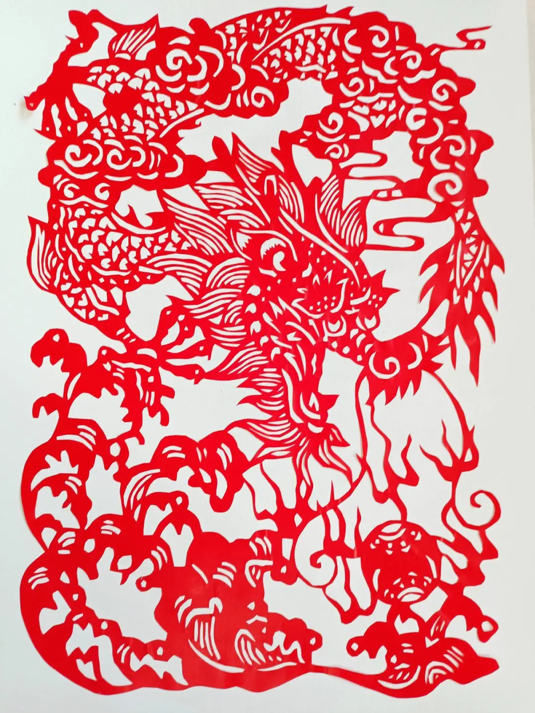

中国剪纸
中国剪纸是一种用剪刀或刻刀在纸上剪刻花纹， 用于装点生活或配合其他民俗活动的民间艺术。 在中国，剪纸具有广泛的群众基础，交融于各族人民的社会生活， 是各种民俗活动的重要组成部分。其传承赓续的视觉形象和造型格式 ，蕴涵了丰富的文化历史信息，表达了广大民众的社会认知、道德观念、 实践经验、生活理想和审美情趣，具有认知、教化、表意、抒情、娱乐、交往等多重社会价值 。 
 2006年5月20日，剪纸艺术遗产经国务院批准列入第一批国家级非物质文化遗产名录。
[2]2009年9月28日至10月2日举行的联合国教科文组织保护非物质文化遗产政府间委员会第四次会议上，
中国申报的中国剪纸项目入选“人类非物质文化遗产代表作名录”
2006年5月20日，剪纸艺术遗产经国务院批准列入第一批国家级非物质文化遗产名录。
[2]2009年9月28日至10月2日举行的联合国教科文组织保护非物质文化遗产政府间委员会第四次会议上，
中国申报的中国剪纸项目入选“人类非物质文化遗产代表作名录”